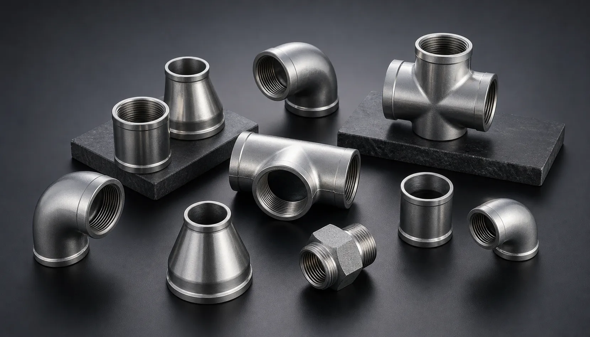

Gururaj Infradesigns is a trusted Stainless Steel 347 Pipe Fittings Manufacturer and Supplier in India, offering ASTM A403 WP347 elbows, tees, reducers, caps, and stub ends with excellent high-temperature strength, oxidation resistance, and weldability for power, petrochemical, and process industries.
Stainless Steel 347 Pipe Fittings are specially designed for high-temperature applications where resistance to intergranular corrosion and thermal stress is essential. Stabilized with niobium (columbium), Grade 347 offers improved resistance to carbide precipitation during welding and prolonged exposure to elevated temperatures. Gururaj Infradesigns is a trusted Stainless Steel 347 Pipe Fittings Manufacturer in India, supplying reliable piping components for demanding industrial applications.
Our range includes elbows, tees, reducers, pipe caps, stub ends, and crosses manufactured to meet industry standards and project specifications. These fittings are widely used in power generation, petrochemical processing, refineries, heat exchangers, and high-temperature process systems where durability and long-term performance are critical.

Stainless Steel 347 is a stabilized austenitic stainless steel grade developed for applications involving elevated temperatures and welding operations. The addition of niobium helps prevent carbide precipitation, allowing the material to maintain corrosion resistance and structural stability during prolonged service at high temperatures. As part of the broader range of Stainless Steel Pipe Fittings, Grade 347 is widely used in industries where thermal reliability is a key requirement.
Stainless Steel 347 Pipe Fittings provide excellent resistance to oxidation, intergranular corrosion, and thermal fatigue. Their ability to perform under continuous high-temperature conditions makes them a preferred choice for critical piping systems in power plants, refineries, and process industries.
| Parameter | Details |
|---|---|
| Material Grade | ASTM A403 WP347 |
| Product Types | Elbow, Tee, Reducer, Pipe Cap, Stub End, Cross |
| Standards | ASTM, ASME, ANSI, MSS SP |
| Size Range | ½" NB to 48" NB |
| Schedule Range | SCH 10 to SCH XXS |
| Manufacturing Process | Seamless & Welded |
| Connection Type | Butt Weld |
| Testing | PMI, Hydro Test, Visual Inspection |
| Certification | EN 10204 3.1 / MTC Available |
The niobium stabilization helps prevent carbide precipitation during welding and high-temperature service. This improves long-term corrosion resistance and reliability in demanding process environments.
Stainless Steel 347 Pipe Fittings maintain strength and structural stability at elevated temperatures. Their performance makes them suitable for applications involving continuous heat exposure and thermal cycling.
Grade 347 offers excellent resistance to oxidation in high-temperature environments. This helps extend service life in furnaces, heat exchangers, and process systems handling hot gases.
The stabilized composition reduces the risk of sensitization during welding, making these fittings suitable for fabricated piping systems that require extensive welding operations.
The combination of heat resistance, corrosion protection, and mechanical durability contributes to lower maintenance requirements and dependable long-term operation.
| Element | Composition (%) |
|---|---|
| Carbon | Max 0.08 |
| Chromium | 17.0 – 19.0 |
| Nickel | 9.0 – 13.0 |
| Manganese | Max 2.0 |
| Silicon | Max 1.0 |
| Niobium + Tantalum | 10 x Carbon Min |
| Phosphorus | Max 0.045 |
| Sulfur | Max 0.030 |
| Property | Value |
|---|---|
| Tensile Strength | 515 MPa Min |
| Yield Strength | 205 MPa Min |
| Elongation | 40% Min |
| Hardness | 95 HRB Max |
Stainless Steel 347 Pipe Fittings are widely used in boilers, steam lines, and power generation systems where elevated temperatures and thermal stress demand reliable long-term performance.
These fittings are commonly installed in petrochemical plants handling high-temperature process fluids and gases. Their resistance to heat and corrosion helps support safe and efficient operations.
Oil and gas refineries utilize Grade 347 fittings in critical piping systems exposed to fluctuating temperatures and demanding operating conditions.
The excellent oxidation resistance of Stainless Steel 347 makes it suitable for heat exchangers, thermal processing equipment, and high-temperature industrial systems.
| Grade | Key Characteristics | Typical Applications |
|---|---|---|
| SS 304 | General corrosion resistance and versatility | Food Processing, General Industry |
| SS 316 | Enhanced chloride and chemical resistance | Marine, Chemical Processing |
| SS 347 | Stabilized for high-temperature service and welding | Power Plants, Refineries |
| SS 904L | Superior resistance to aggressive chemicals | Chemical & Process Industries |
Stainless Steel 347 is specifically developed for elevated-temperature applications where resistance to intergranular corrosion and thermal fatigue is important. While Stainless Steel 316 Pipe Fittings are preferred for corrosive environments and Stainless Steel 904L Pipe Fittings for aggressive chemical service, Grade 347 is often selected for high-temperature industrial systems requiring long-term thermal stability.
| Finish | Benefits |
|---|---|
| Pickled | Removes scale and improves corrosion resistance |
| Passivated | Enhances the protective oxide layer |
| Polished | Improves cleanliness and surface appearance |
| Mill Finish | Suitable for standard industrial applications |
Proper surface finishing helps improve corrosion performance, surface quality, and overall service life in industrial piping systems.
Gururaj Infradesigns supplies Stainless Steel 347 Pipe Fittings in multiple sizes, schedules, and specifications to support industrial piping projects. Our products are supplied to engineering companies, fabrication units, EPC contractors, and process industries requiring dependable piping solutions.
As a trusted supplier, we focus on providing consistent quality, technical support, and timely deliveries to meet the requirements of industrial maintenance, expansion, and new project installations.
At Gururaj Infradesigns, quality remains an important part of our manufacturing and supply process. All pipe fittings undergo inspection for dimensional accuracy, workmanship, and material compliance before dispatch.
As an ISO Certified Company, we are committed to supplying reliable piping components that meet industrial expectations for quality, consistency, and performance.
Selecting the right pipe fitting grade depends on operating temperature, corrosion exposure, process media, and fabrication requirements. Choosing the correct material helps improve system reliability, performance, and service life. Our team can assist in selecting the most suitable fitting grade, size, and specification for your project. We work closely with engineers, fabricators, EPC contractors, and industrial buyers to provide practical guidance and dependable piping solutions for industrial applications.